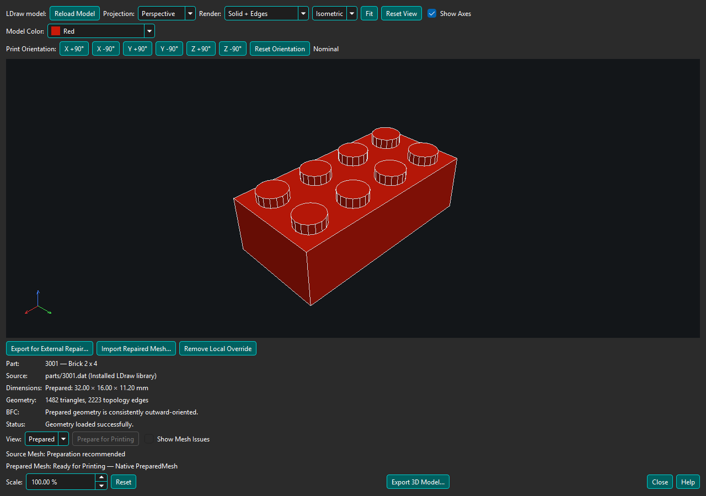
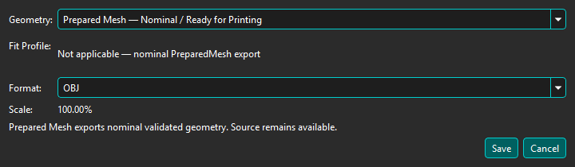

Enable Mesh Repair is on by default. It controls automatic preparation where a printing workflow supports it. Turning it off preserves the setting locally and does not remove the viewer's explicit Prepare for Printing action. Opening a viewer never starts preparation automatically.

Source is the authored LDraw triangle geometry. Solid + Edges uses the model's hard and visible conditional edges; Wireframe also exposes triangle boundaries. Show Mesh Issues highlights Source boundaries and topology issues.
Prepare for Printing explicitly builds a closed, consistently oriented nominal mesh where BrickSuite can determine a safe result. Preparation runs asynchronously; a small busy indicator appears beside the action while it runs. Preparation never changes installed LDraw files. Select Prepared to inspect the result; its edges are derived from prepared topology rather than authored LDraw edge commands.
Prepared Mesh: Ready for Printing means BrickSuite's current topology checks succeeded. It is not a guarantee that every printer, slicer, material, tolerance, or intended use will succeed. Dimensions are nominal geometry dimensions before the displayed uniform Scale is applied.
Unsupported or ambiguous construction is reported without replacing Source geometry. Preparation failures leave Source available for inspection.

Scale changes every displayed dimension uniformly without modifying the installed source or authoritative mesh. At 100%, 1 LDraw unit = 0.4 mm. Scaling is not specialized LEGO fit or tolerance correction.
Export 3D Model... writes OBJ, binary STL, or standards-based 3MF in millimetres at the displayed Scale and Print Orientation. A validated Prepared Mesh is selected by default and identified as Ready for Printing; the authoritative Source Mesh remains selectable. Prepared and ManufacturingMesh exports use the same selected orientation without changing their authoritative geometry. BrickSuite writes a portable model 3MF, not slicer project settings.
Source export is not a BrickSuite printability guarantee. When preparation is unavailable, unsupported, ambiguous, or fails, Source OBJ and STL remain available for analysis or possible repair by your slicer.
3MF stores the selected Model Color as the model's base color. Printed decorations and multi-color surface details are not currently reproduced. Filament and printer assignments remain controlled by the slicer.
For calibrated corrections see Calibration Packages & Fit Profiles. If native preparation fails, see Local Printable Override / External Repair.
3D Printing overview | Help Home
Check the export result and diagnostics for the selected profile, applicable features, and corrections actually applied. ManufacturingMesh is the profile-driven output; Source and nominal Prepared Mesh remain unchanged. Repaired surfaces do not acquire fit ownership from a profile selection. The current Experimental Auto Fit ownership gate rejects unproven mappings and does not emit a nominal-equivalent experimental file merely because zero features map.